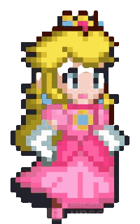
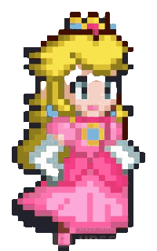
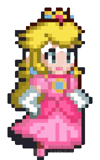

Escolha um jogador
Mario

Peach
Imagens usadas sem fins lucrativos.
Criador do Mario Bros: Nintendo Entertainment Analysis & Development
Jogo inspirado em outras aplicações e em outros conteúdos.
 Mario

Peach
Mario

Peach